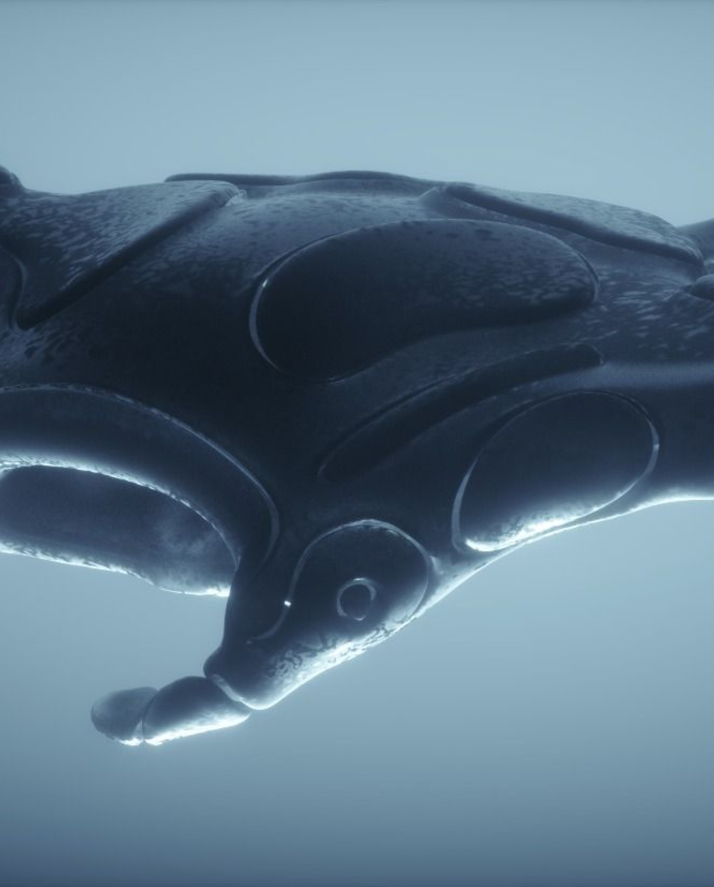

Perchè Mobular?
×
Abbiamo cominciato ad analizzare le zone più inquinate della terra e grazie all’ultimo rapporto del programma delle nazioni unite (Unep) è stato constatato che ogni chilometro quadrato di oceano contiene in media 63.320 particelle di microplastica.
Il Mediterraneo è uno dei mari più inquinati al mondo: qui si concentra il 7% delle microplastiche a livello globale.
Con dati così allarmanti non potevamo non intervenire e grazie ad un team di scienziati , programmatori , ingegneri e biologi marini abbiamo creato il progetto Mobular.

